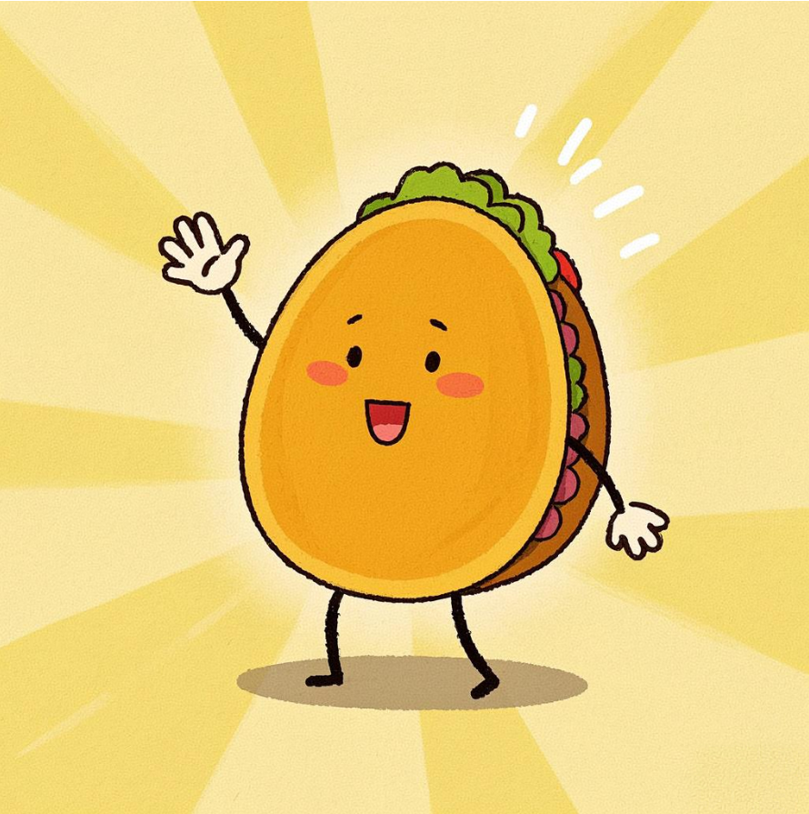

欢迎来到食语小镇

欢迎小朋友们来到食语小镇！我是你们的朋友小雨，在这里你们可以了解到很多有关食物的小知识， 可以进入虚拟小厨房进行烹饪，是不是很有意思呢，你还想进��更多的食物搭配吗，那就快和小雨一起来吧。
欢迎小朋友们来到食语小镇！我是你们的朋友小雨，在这里你们可以了解到很多有关食物的小知识， 可以进入虚拟小厨房进行烹饪，是不是很有意思呢，你还想进��更多的食物搭配吗，那就快和小雨一起来吧。